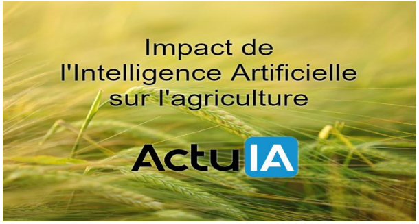
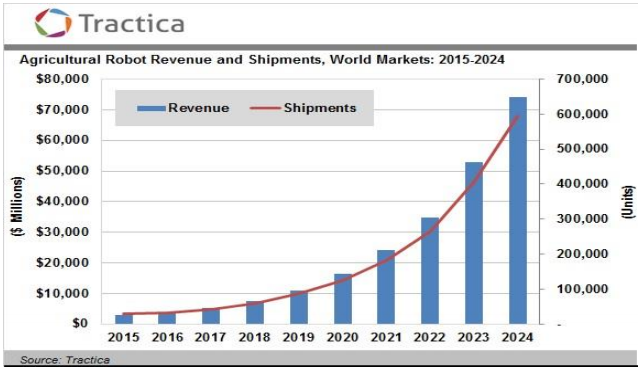

Quel sera l’impact de l’intelligence artificielle sur l’agriculture ?
L’intelligence artificielle apporte de nouveaux outils et bouleverse les processus existants dans de très nombreux domaines comme la santé, l’hôtellerie, l’industrie ou encore le management. Dans ce dossier, nous allons nous centrer sur l’agriculture car ce secteur connait depuis quelques années une véritable révolution numérique répondant aux défis économiques, sociaux et environnementaux actuels.
Nous avons souvent tendance à associer la technologie aux grandes métropoles urbaines, à la finance ou à l’aéronautique et à penser que les métiers de la terre en sont privés. L’image de l’agriculteur fauchant son blé manuellement a pourtant fait son temps et les agriculteurs sont aujourd’hui en majorité des professionnels hyperconnectés utilisant des équipements à la pointe de la technologie.
Intelligence artificielle, Big Data et robotisation :
Le modèle agricole a fortement évolué et s’est progressivement digitalisé pour faire face à la demande mondialisée. La technologie, via la mécanisation et la numérisation, a déjà permis d’optimiser le travail de l’agriculteur. Comme l’indique Pascal Cochelin, de Terre-net Média :
« L’agriculture, comme l’industrie et les services, vit la révolution du numérique. Drones, tracteurs autonomes, caméras, machines de traite connectées, etc. sont autant de technologies qui optimisent le travail à la ferme et en plaine. Il ne manque plus à toutes ces machines qu’un peu d’intelligence pour se voir confier des tâches qui ne sont pas totalement prévisibles ».
Le smart farming, avec l’arrivée des drones, machines autonomes, capteurs, données, logiciels et outils connectés à base d’intelligence artificielle, fait donc évoluer encore davantage les outils et tâches des professionnels et leur permet de répondre aux nouveaux enjeux du secteur. D’après Research and Markets, le marché de l’IA en matière d’agriculture était évalué à près de 518,7 millions en 2017 et devrait se développer de plus de 22,5% pour atteindre 2.6 milliards d’ici 2025. Les investisseurs en sont conscients et participent de plus en plus activement aux levées de fonds de start-ups ‘Agritech’ et ‘SmartAgri’. En 5 ans, ce sont 800 millions de dollars qui ont ainsi été collectés par les jeunes pousses du secteur à travers le monde.
Améliorer les récoltes, gérer la maintenance, réduire les coûts de fonctionnement et la consommation d’énergie et d’eau, tout en soulageant l’agriculteur d’une partie de ses tâches répétitives, est désormais plus facile grâce aux nouvelles technologies. L’intelligence artificielle permet en effet de développer des outils d’optimisation des flux de travail pour la mise en place de processus visant à un meilleur rendement. Cependant, si la prévisibilité et la compétitivité sont deux des défis majeurs du secteur, le respect de l’environnement l’est tout autant. L’agriculteur doit désormais parvenir à produire davantage et surtout mieux. C’est également sur ce point que se focalisent nombre de solutions développées par les ingénieurs et chercheurs en se basant sur l’intelligence artificielle et notamment le machine learning.
Des outils au service des agriculteurs :
Les nouvelles technologies reposant sur l’intelligence artificielle, l’IoT, le big data, la robotique et l’analyse avancée, permettent le développement d’une agriculture de précision. Selon les estimations de McKinsey & Company, le marché de l’agriculture robotique devrait passer de 1 milliard en 2014 à entre 14 et 18 milliards d’ici 2020. Donner aux agriculteurs des outils pour observer, mesurer et analyser les besoins tant de leurs exploitations que de leurs employés permet une meilleure gestion des ressources tout en réduisant l’impact environnemental et le gâchis.
Contrôle des exploitations :
L’analyse de la santé des sols et exploitations est un enjeu de taille pour les agriculteurs. Le machine learning et le deep learning apportent de nouveaux outils de contrôle des exploitations, notamment en matière d’analyse d’échantillons de sol, afin de détecter plus facilement une possible contamination, la prolifération de microbes ou encore des mutations génétiques nuisibles. Algorithmes, reconnaissance d’images et vision par ordinateur permettent d’identifier l’état et les besoins des champs en temps réel à l’aide d’un simple smartphone par exemple. En analysant l’image du sol et les exploitations, des applications et outils tels que Carbon Bee, Exotic Systems, VisioGreen, Weenat, le boîtier Karnott développé par la startup ConnectAgri, PEAT, Plantix de Trace Genomics ou le tag sensor de Yes it is, apportent aux agriculteurs une analyse précise et des recommandations pour optimiser leur productivité. NatureSweet, qui utilise l’intelligence artificielle de Prospera pour ses exploitations de tomates aux États-Unis et au Mexique, a annoncé une amélioration de ses récoltes de 2% à 4% et estime que la technologie lui permettra d’optimiser progressivement ses champs de près de 20% comme le rapporte CNN. La société s’est dotée pour ce faire de caméras pour détecter en temps réel la prolifération d’insectes et de plantes eÀ côté des objets connectés, caméras, capteurs, stations météorologiques intelligentes (comme la plateforme agrométéo Sencrop ou le parapluie intelligent de Wezzoo, baptisé Oombrella) et machines de terrain aux réglages proactifs, l’agriculture peut désormais compter sur des drones de pointe. Ils peuvent réaliser des tâches variées allant de la surveillance à la détection en passant par l’observation et la collecte de données. Les informations transmises par les drones ont un impact fondamental dans les recommandations des algorithmes et facilitent la prise de décisions. D’après une étude de PwC, le marché des drones agricoles devrait exploser d’ici 2025 pour peser plus de 32 milliards de dollars. Éléments topographiques, hauteur des plantes, état des semences, analyses de la fertilisation ou encore relevés d’hydrométrie se traduisent par une optimisation de la prise de décision et donc du travail de l’agriculteur.n difficulté.
Aide à la décision et à l’exploitation :
Ce type de contrôle des exploitations permet une optimisation des actions des agriculteurs grâce également à des systèmes de gestion des cultures et élevages tels que ceux de Piloter sa ferme ou de The Green Data. Que ce soit dans l’agriculture intensive, dans des types d’exploitations très spécifiques ou dans l’agroindustrie, des plateformes et applications intelligentes sont disponibles pour faciliter d’un côté toute la partie administrative mais également permettre à l’industrie agri-agro d’exploiter au mieux les données. Les algorithmes développés peuvent désormais aider l’agriculteur à simplifier ses processus, à optimiser ses performances, à gérer les risques à tous les niveaux et si possible à innover. Ils utilisent des données de multiples sources, dont les objets connectés, et permettent une prise de décision optimisée. Ces systèmes sont devenus de véritables assistants virtuels, qui plus est lorsqu’ils sont combinés à l’analyse prédictive.
Analyse prédictive :
Les algorithmes de machine learning permettent de suivre et de prédire l’évolution des exploitations en fonction de paramètres prédéfinis, dont bien évidemment le climat. Plusieurs solutions proposent des outils de pointe combinant données collectées en temps réel (météo, état des semences, niveaux d’irrigation, etc.), historiques et informations de sources diverses pour évaluer l’état des exploitations et proposer des recommandations en fonction des variations de climat, de l’apparition de maladies, de la situation du marché, etc. En se basant sur les outils de contrôle des exploitations et objets connectés, les systèmes intelligents comme Samsys, ec2ce ou encore aWhere peuvent en effet prédire l’évolution de la présence d’un microbe ou d’une mutation génétique et permettre à l’agriculteur de prendre la meilleure décision au meilleur moment. En lien direct avec des satellites, des drones ou des outils de collecte de données installés dans les exploitations ou sur les machines, ces algorithmes sont capables d’effectuer des prédictions et d’aider l’agriculteur à mieux planifier les événements à venir, toujours dans l’optique d’améliorer sa productivité.
Robotisation avancée :
À l’heure actuelle, l’agriculture connait déjà une évidente robotisation, notamment avec des outils tels que les robots de Naïo Technologies. Des activités comme la traite, l’arrosage, la récolte ou encore la distribution d’aliments aux animaux sont très souvent mécanisées et programmées en fonction de paramètres prédéfinis. Avec l’intelligence artificielle, ces outils peuvent aller plus loin que la simple action. Ils peuvent en effet identifier et analyser des situations grâce aux données recueillies et agir ou alerter l’agriculteur en fonction. Les professionnels peuvent ainsi compter sur des recommandations personnalisées et motivées par des éléments fiables, en temps réel. Les algorithmes enrichis en intelligence artificielle apprennent également de leurs expériences et des circonstances pour être toujours plus précis. Ces tracteurs autonomes, drones agricoles et autres robots développés pour un usage agricole vont représenter, selon le nouveau rapport Tractica, un marché de plus de 74,1 milliards de dollars d’ici 2024. La demande devrait en effet passer de 32.000 exemplaires en 2015 à près de 600.000 unités en seulement 9 ans.
